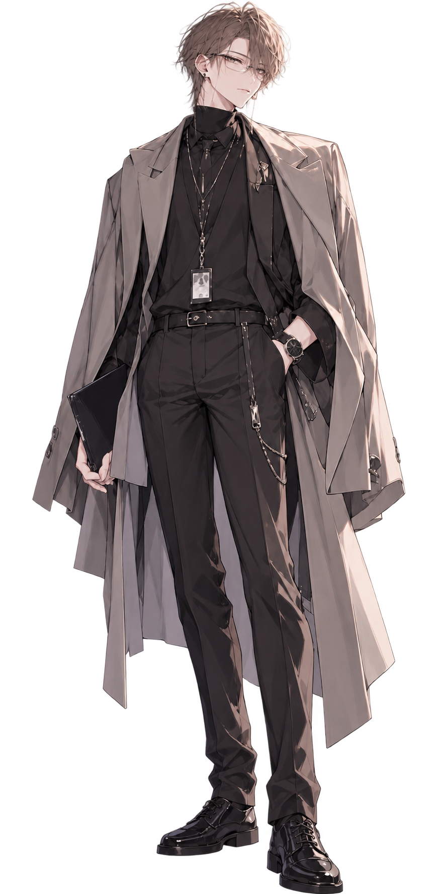

QUARTET
「まぁ、そういう日もある。」
GRAY / QUIET SUPPORT

名前： Shin / シン
年齢： 28歳
職業： IT・エンジニア系
活動： ゲーム配信・コラボ中心
メインゲーム： VALORANT / APEX / GTA / Minecraft
イメージカラー： グレー
得意： 索敵 / 情報共有 / 状況判断
性格： 温厚 / マイペース / 面倒見がいい
所属： QUARTET
落ち着いていて穏やかな性格。 QUARTETの中では比較的マイペースで、 周りが騒いでいてもあまり動じない。
Riaの自由な行動にも付き合いながら、 必要なときには自然にフォローを入れる。 Riaから見ると、 お兄ちゃんのような存在。
普段はかなり温厚だが、 ホラーゲームなどで突然大声を出すことがあり、 そのギャップがたびたび話題になる。
VALORANT / APEX / GTA / Minecraft / ホラー / 雑談 / コラボ
現在ランク： Platinum 3
最高ランク： Diamond 1
現在ランク： Platinum 2
最高ランク： Diamond 4
落ち着いた話し方で、 周囲の状況を見ながらプレイするタイプ。 FPSでは味方への情報共有を大切にし、 自分が目立つよりもチーム全体を動かすことを好む。
CALM PARTNERS / THE ADULTS
QUARTETの中でも特に落ち着いた二人。 RiaとRenが騒いでいる横で、 なんとなく状況を把握していることが多い。
YunaはShinに遠慮なく話しかけることができ、 ShinもYunaには比較的素直。 長く一緒にゲームをしていることもあり、 会話に無理がない。
Yunaが「ちょっとシン！！」と ツッコミを入れることも多いが、 Shinはあまり気にせず 「まぁ、そういう日もある」と返すことが多い。
RiaとRenが何かを始めても、 二人で顔を見合わせて 「また始まったね」 で済ませていることが多い。
妹のような存在。 Riaが自由に動いているのを 少し離れたところから見守っていることが多い。
熱くなりやすいRenを 比較的冷静に見ている。 二人でいると落ち着いた会話になる。
気を遣わずに話せる相手。 Yunaからのツッコミにも いつもの調子で返す。
Shinを象徴するような一言。 大抵のことはこの言葉で受け流す。
Yunaからの定番ツッコミ。 Shinが何かやらかしたときによく飛んでくる。
VALORANTではSovaをよく使用。 索敵や情報共有を活かして、 味方が動きやすい状況を作るのが得意。
普段は落ち着いているShinだが、 ホラーゲームでは突然大声を出すことがある。
本人は特別世話を焼いているつもりはないが、 RiaやRenが困っていると自然にフォローに入る。